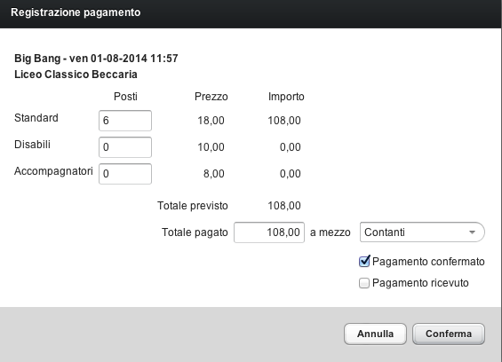

Al ricevimento della evidenza di pagamento, occorre confermare il pagamento.
All'effettivo ricevimento del corrispettivo, occorre registrare l'incasso.
Entrambe queste operazioni si effettuano con la funzione Registra Pagamento della Prenotazione.

Per registrare il pagamento:
Selezionare la prenotazione
Premere il pulsante Altro -> Registra Pagamento (oppure Premere il tasto destro e selezionare Registra Pagamento... dal menu contestuale)
Inserire i dati di pagamento nella apposita scheda
Nota: in questa fase è ancora possibile rettificare il numero di posti prenotati.
Inserire l'importo pagato
Inserire il mezzo di pagamento
Selezionare Pagamento Confermato se si tratta di conferma o Pagamento ricevuto se si tratta di incasso
Premere Conferma per confermare il pagamento
Nota: l'importo previsto e l'importo ricevuto possono differire.
Inserire sempre l'importo effettivamente ricevuto.
Il pagamento viene registrato e nel caso di registrazione pagamento una email di conferma viene inviata al referente (nel caso di registrazione incasso, il referente non viene notificato).
Nella lista viene visualizzata una spunta in corrispondenza della colonna pag conf o pag ric a seconda del tipo di registrazione effettuata.
Quando si registra un pagamento, viene automaticamente inviata al referente una email di conferma (viene usato l'indirizzo email inserito nella prenotazione).
Il contenuto di questa mail si può modificare tramite la funzione Lettere Base (in Tabelle). Il codice della mail è: conferma_pagamento (vedi sezione: Lettere Base).
Se per qualsiasi motivo la mail non fosse stata ricevuta o fosse andata persa, per reinviarla si può aprire la scheda della prenotazione, andare alla pagina Eventi, selezionare la email già inviata e premere Reinvia.